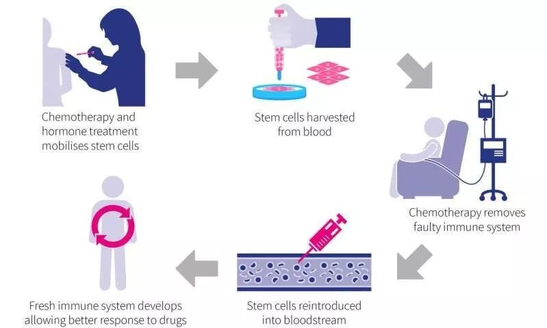
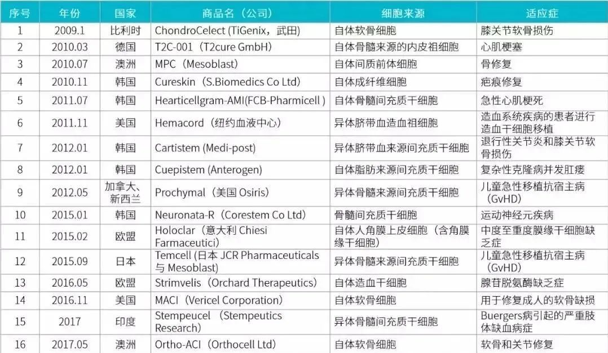

年后肝"负重"？百年春护肝美颜能量抗衰老针——给肝"松绑"，让脸发光！
2026-03-01

About Us
关于百年春
干细胞（stem cells）是一类具有自我复制能力的多潜能细胞，是一种未充分分化，尚不成熟的细胞，具有再生各种组织器官和人体的潜在功能，医学界称为“万用细胞”。
很多朋友会问起：干细胞治疗，到底是自体好，还是异体好呢？为了更好地了解干细胞治疗的原理，仅作为科普和探讨需要，我们整理了如下内容：
干细胞治疗有两种类型：自体和同种异体。
自体干细胞，顾名思义就是使用患者自己的干细胞，通常从血液、脂肪或患者自己的骨髓中收集。
通过事先收集，科学手段分离制造出可治疗用的干细胞，并在治疗的后期将其返输回患者体内。
同种异体干细胞移植，也很好理解就是使用供体（捐献者）的干细胞。我们知道干细胞可以从新生儿的脐带血或组织或者胎盘血液中收集。
不论是自体还是同种异体干细胞治疗，这两种方法都利用好的干细胞替代患者体内受损的细胞。
通过外周血收集

首先将患者或供体的血液收集，通过抽血来收集成体细胞。并将其处理逆转为干细胞状态，冷冻并储存以备移植使用。
骨髓采集
医生从患者或捐赠者的骨盆骨中收集液体。然后将收集的液体骨髓加工，冷冻并储存（如果是自体的），将供体的干细胞保存在库中或用于移植治疗。
脂肪采集
通过抽取肚子上皮下脂肪，约100ml左右，再进行提取分离。需要进行麻醉进行，与其他来源一样，脂肪中的干细胞可以收获并保存以备后用。
上面提到的两种类型的干细胞疗法具有各自不同的优劣势：
自体，因为自体干细胞治疗的干细胞，全部来自患者自己。可以降低副作用的风险。在新血液和免疫系统细胞的生产方面更快融入，不会形成排斥且风险较小。
同种异体 ，也有独特的优势，当遇到突发急救重大事故时，未储存其自体干细胞，方可采用同种异体干细胞进行抢救。因为不必要从自身提取，随取随用。但其缺点也很明显，相对缺乏稳定性，难免会出现强度不一的排斥性。
还有一些公司的说法我很难理解，异体干细胞全是优点，自体干细胞全是缺点。我们来看一下全球已经上市的细胞药物和国内已经申报的干细胞疗法的统计，里面自体比异体的比例的占比更高，并且国外目前自体干细胞是作为主流的细胞治疗技术，应用范围广。

对于患有难治性疾病问题的患者，干细胞移植确实是一种有希望的治疗方法。由于仍需要进一步的研究和更多临床数据，文章只是从浅显的方面让您了解干细胞移植治疗的基本知识。对于正在考虑接触干细胞移植治疗的患者一定要遵循专业人员的建议。